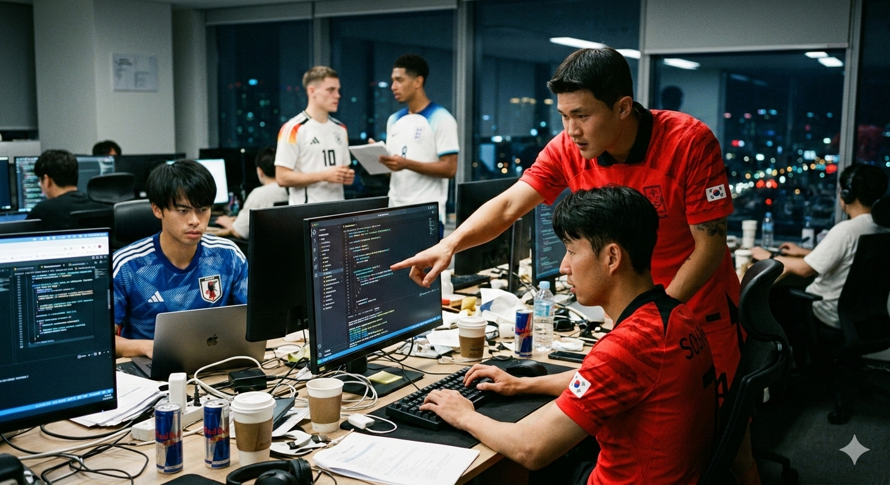

El problema que nadie sabía que tenía
Durante décadas, las quinielas han funcionado igual: un cuaderno destrozado, un bolígrafo que nunca escribe, y ese primo que JURA que él anotó 3-1 cuando el papel dice 1-3. "Pero si yo lo puse así", dice mientras todos lo miran con desconfianza.
Además está el drama de la tabla de posiciones. Que si "yo tengo más puntos", que si "no, tú te equivocaste en la suma", que si "este marcador no cuenta porque se cortó la luz y no vi cuando pusiste tu resultado". Un caos total.
"Decidimos acabar con la corrupción quinielera de una vez por todas, esta vez sera diferente". — El equipo de desarrollo, con una canaima a la mano
El proyecto, bautizado creativamente como "Quiniela Mundial 2026" (porque la simplicidad también es bella), es una plataforma web completa que hace TODO lo que necesitas para organizar una quiniela como Dios manda.

La Solución: Quiniela Mundial 2026
Un desarrollador con más café que horas de sueño, un diseñador que jura que el dorado "es elegante", y una base de datos PostgreSQL que está aguantando más que la paciencia de un venezolano en una cola han podido alinearse y crear un sistema web de predicciones para este Mundial 2026.
Sistema de Registro Inteligente: Olvídate de anotar nombres en un cuaderno. Ahora cada participante se registra con su código único, elige su selección favorita para ser campeona (dato completamente innecesario pero emocionante), y listo.
Predicciones Sin Drama: Haces tu predicción, le das "Guardar", y BAM, queda registrada con fecha y hora. No hay vuelta atrás. No hay "es que yo puse 2-0". El sistema lo tiene TODO grabado. Es como el VAR, pero que realmente funciona.
Calculos automaticos: Lo mejor. El sistema calcula TODO automáticamente. Nada de "déjame sacar la calculadora", nada de "espera, me equivoqué sumando". Cero posibilidad de fraude matemático.
El Sistema de Puntos mas justo del planeta:
- 9 puntos si le atinas al marcador exacto (tenes que cerrar el estadio)
- 7 puntos si aciertas el ganador y un marcador de goles de un equipo (i am jose mourinho)
- 5 puntos si solo aciertas el ganador o empate (solo los cracks hacen eso)
- 2 puntos si aciertas un marcador de goles (perdimos por que no ganamos)
- 0 puntos si fallaste feo (Penal de Ramos 2012)
Características que te harán sentir del futuro
Ranking en tiempo real: Como en la Fórmula 1, pero con menos adrenalina y más cerveza. Ves tu posición, los puntos de todos, y ese orgullo o vergüenza dependiendo de si vas primero o último.
Mr. CHIP - El análisista social:
Una página donde ves quién predijo qué para cada partido. Es básicamente para stalkear las predicciones de la competencia y darte cuenta que tu hermano SIEMPRE apuesta a Brasil, sin importar contra quién juegue.
Funciona así:
entras, seleccionas un partido, y ves tres columnas:
- Los locateles: Predicen que gana el local
- Los diplomáticos: Predicen empate para todos
- Los arrozeros: Predicen que gana el visitante
Incluye contador de quién NO ha hecho su predicción, perfecto para etiquetar en el grupo de WhatsApp: "Eyyy, todavía hay 5 flojos que no han predicho".
"El sistema es tan fácil que hasta mi suegro lo usa, y eso que él todavía no sabe hacer pago movil" — Desarrollador probando con un familiar
Preguntas Frecuentes
Gankeamos a uno de los fundadores del proyecto, CEO, cosplayer de jesucristo y esto fue lo que nos respondio luego de insultarnos:
P: ¿Puedo hacer trampa?
R: Técnicamente no. El sistema guarda TODO con fecha y hora. Es como tener un juez del VAR permanente.
P: ¿Qué pasa si se me olvida hacer una predicción?
R: Lloras en silencio mientras ves a los demás sumar puntos. El sistema no perdona.
P: ¿El sistema es 100% confiable?
R: Más confiable que Ferraresi despejando un balon divido.
P: ¿Quién puede modificar mis predicciones?
R: Nadie. Ni tú mismo. Una vez que le das "Guardar Predicción", eso queda grabado en piedra digital. Ni el administrador, ni tu mamá, ni el mismísimo creador del sistema puede cambiarlas. Es como mandarle un mensaje al ex: una vez enviado, no hay vuelta atrás.
P: Pero... ¿y si el administrador me tiene arrechera y cambia mis puntos?
R: El administrador NO puede cambiar puntos individuales. El sistema los calcula automáticamente comparando tu predicción con el resultado oficial. Lo único que puede hacer el admin es meter el marcador real del partido, y ahí el sistema hace la magia matemática. Es como un árbitro del VAR que solo ve, no decide.
P: ¿Cómo sé que el administrador no está viendo mis predicciones antes de hacer las suyas?
R: Porque el administrador también tiene que hacer sus predicciones con el mismo límite de 10 minutos antes del partido. El sistema no discrimina, ni siquiera con quien lo creó. Democracia digital pura. Además, todas las predicciones quedan registradas con fecha y hora exacta, visible para todos en la sección "Mr. CHIP". Si el admin hace trampa, TODOS lo van a ver.
P: ¿El administrador puede ver mi contraseña?
R: No hay contraseñas. Usas un código único que el admin te da, pero ese código está encriptado en la base de datos. Ni siquiera el admin puede verlo en texto plano. Es como el PIN de tu tarjeta: el banco sabe que existe, pero no sabe cuál es.
P: ¿Venden mis datos a terceros?
R: ¿Qué datos? ¿Que predijiste que México gana 2-1? Hermano, esto es una quiniela familiar, no Facebook. Nadie quiere tus datos. Ni regalados.
P: ¿El sistema guarda mi IP o ubicación?
R: El servidor guarda logs básicos (fecha, hora, acción realizada) por razones de seguridad, pero no estamos stalkeando a nadie. No nos interesa saber si hiciste tu predicción desde el trabajo, desde el baño, o desde la casa de tu suegra.
P: ¿Vale la pena participar?
R: Hermano, es una quiniela. No es el la loteria. Pero SÍ ganas:
- Derecho a presumir todo el año
- Una excusa para ver TODOS los partidos
- Estrés innecesario cada vez que tu predicción va mal
- Posibilidad de humillar a tu familia/amigos con tu conocimiento futbolístico
- Recuerdos digitales de ese Mundial donde casi le atinas a un Haiti vs Argelia
¿Vale la pena? Absolutamente sí.
Conclusión:
La Quiniela Mundial 2026 de Droguería Carrisan es la evolución natural de una tradición que llevaba décadas pidiendo a gritos una mejora.
Ya no más papeles arrugados, sumas incorrectas, o "es que yo puse otra cosa".
Ahora es digital, automático, y más justo que el árbitro promedio de CONMEBOL (que no es decir mucho, pero es algo).
El Mundial 2026 será en Estados Unidos, México y Canadá. Pero la verdadera competencia, querido lector, será en tu pantalla, viendo cómo tu predicción de 1-0 se convierte en un vergonzoso 0-1.
Prepárate.
El Mundial ya no será solo de 32 selecciones. También será tuyo.